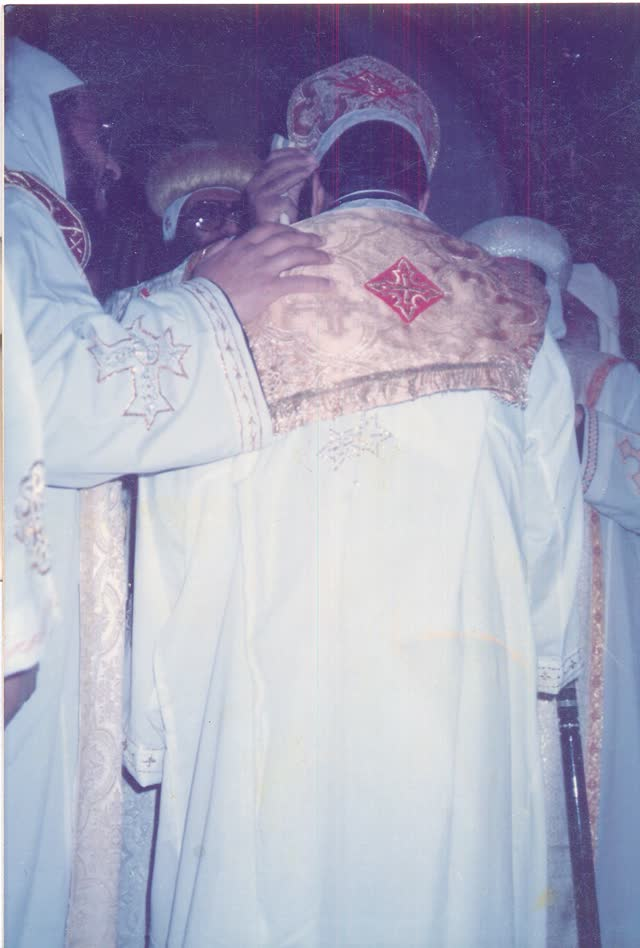

الرئيسية ‹ القمص ويصا صبحي تادرس

القمص ويصا صبحي تادرس
قمص كنيسة السيدة العذراء مريم بديرمواس — كاهن منذ ١١ فبراير ١٩٩١
من مواليد طنطا عام 1956، تتلمذ على يد الأنبا أغابيوس وانتقل معه إلى ديرمواس، فسيم كاهنًا بيديه عام 1991 وقمصًا عام 1997، وخدم وكيلًا لمطرانية ديرمواس ودلجا طوال ثمانية وعشرين عامًا. أكثر من ٣٥ عامًا من الكهنوت، وخدمة كنسية بدأت منذ سنوات شبابه.
السيرة الكاملة
من طنطا إلى ديرمواس
وُلد القمص ويصا صبحي تادرس في 4 ديسمبر 1956 في طنطا، وحصل على بكالوريوس التجارة من جامعة طنطا عام 1980. ارتبط بديرمواس منذ عام 1988، ثم سُيم كاهنًا في 11 فبراير 1991 بيد الأنبا أغابيوس والأنبا توماس.
قضى فترة روحية عقب السيامة بدير السيدة العذراء بالمحرق، ثم بدأ خدمته الكهنوتية في إيبارشية ديرمواس ودلجا، ورُفع إلى رتبة القمصية في 22 يونيو 1997. وتمت خطوبته في 3 يناير 1991، وتزوج من كارولين مكرم غالي في 10 فبراير 1991.
الميلاد والنشأة
الاسم العلماني: سمير صبحي. تاريخ الميلاد: 4 ديسمبر 1956. مكان الميلاد: طنطا، محافظة الغربية.
التعليم والإعداد
أتم تعليمه الثانوي في طنطا (تشير الإفادة العائلية إلى عام 1975، والسنة الدقيقة قيد التوثيق بمستند رسمي)، ثم حصل على بكالوريوس التجارة من جامعة طنطا عام 1980، وارتبط قبل السيامة بالخدمة والتربية الكنسية والافتقاد والخلوات.
السيامة وبداية الكهنوت
في 11 فبراير 1991 تمت سيامته كاهنًا بيد الأنبا أغابيوس والأنبا توماس. أعقبت السيامة فترة روحية بدير السيدة العذراء بالمحرق، ثم بدأ خدمته الكهنوتية في مارس 1991.
22 يونيو 1997: رُفع إلى رتبة القمصية.
بيانات أساسية
- الاسم: القمص ويصا صبحي إبراهيم تادرس
- الزواج: كارولين مكرم غالي — 10 فبراير 1991
- الخدمة الحالية: قمص كنيسة السيدة العذراء مريم بديرمواس
- المسؤولية السابقة: وكيل مطرانية ديرمواس، 22 يونيو 1997 – 5 فبراير 2025
- العلاقة بالأنبا أغابيوس: 1988–2025
الخدمة والمسؤوليات
مسيرة خدمة متعددة الجوانب
امتدت مسيرته الكهنوتية منذ 1991 عبر الرعاية الروحية والخدمة الكنسية والعمل الإداري والتوثيق والتواصل العام.
- الرعاية الروحية والافتقاد والتربية والخدمة اليومية.
- مسؤوليات كنسية وإدارية داخل الإيبارشية.
- الارتباط بأعمال التوثيق والأحوال الشخصية والزواج.
- متابعة أعمال ومشروعات كنسية وتواصل مؤسسي.
- حضور إعلامي موثق في عدد من الأحداث والأزمات العامة.
- قمص كنيسة السيدة العذراء مريم بديرمواس الموقع الحالي
- وكيل مطرانية ديرمواس سابقًا • 22 يونيو 1997 – 5 فبراير 2025
الخدمة
مجالات الخدمة والمسؤولية
الرعاية الروحية
الخدمة الكهنوتية والرعاية والافتقاد والتربية والخدمة اليومية.
الخدمة الكنسية والإدارية
مسؤوليات كنسية وإدارية امتدت عبر سنوات خدمته في الإيبارشية.
التوثيق والأحوال الشخصية
حضور مرتبط بالتوثيق والزواج والأحوال الشخصية الكنسية.
التواصل العام والإعلام
حضور في مناسبات الإيبارشية وخدمتها.
علاقة تلمذة وخدمة امتدت من 1988 إلى 2025
أبوه الروحي ومعلمه الأنبا أغابيوس
انتقل القمص ويصا مع أبيه الروحي ومعلمه الأنبا أغابيوس من طنطا إلى ديرمواس عام 1988 تلميذًا يستعد للكهنوت، فوضع عليه اليد كاهنًا في 11 فبراير 1991، ثم رفعه إلى القمصية في 22 يونيو 1997 وعهد إليه بوكالة المطرانية. ثمانية وعشرون عامًا من الخدمة المشتركة في الرعاية والتوثيق والافتقاد بين مدن الإيبارشية وقراها، حتى رقد الأنبا أغابيوس في الرب في 4 فبراير 2025.
المسيرة الزمنية
خط زمني واحد للسيرة
المسيرة كما وثّقتها مصادر الأرشيف، ومصادرها مذكورة في ذيل هذه الصفحة.
- الثلاثاء 4 ديسمبر 1956الميلاد في طنطاولادة سمير صبحي في منطقة الحكمة بطنطا — 25 هاتور 1673 ش، تذكار استشهاد القديس مرقوريوس أبي سيفين.
- 1980بكالوريوس التجارةتخرج في كلية التجارة بجامعة طنطا.
- 1988الانتقال إلى ديرمواسانتقل ليخدم مع معلمه الأنبا أغابيوس تمهيدًا للرسامة. وفي العام نفسه سيم الأنبا أغابيوس أسقفًا للإيبارشية.
- الخميس 3 يناير 1991الخطوبة25 كيهك 1707 ش، تذكار نياحة القديس أنبا يحنس كاما القس.
- الأحد 10 فبراير 1991الزواج3 أمشير 1707 ش — زواجه من كارولين مكرم غالي.
- الاثنين 11 فبراير 1991السيامة الكهنوتية4 أمشير 1707 ش — رُسم كاهنًا باسم القس ويصا صبحي بوضع يد الأنبا أغابيوس والأنبا توماس مطران القوصية.
- الجمعة 1 مارس 1991استلام الذبيحة بدير المحرق22 أمشير 1707 ش، تذكار استشهاد القديس ماروتا أسقف ميافرقين — قداس استلام الذبيحة بدير السيدة العذراء بالمحرق.
- الخميس 21 مارس 1991بدء الخدمة في الإيبارشية12 برمهات 1707 ش، التذكار الشهري للملاك ميخائيل — عاد من المحرق وبدأ خدمته في ديرمواس ودلجا.
- 1991مكتب التوثيق والزواجتنسب صدى البلد (2026) إلى خدمته تأسيس مكتب التوثيق والزواج بالمطرانية.
- الأحد 22 يونيو 1997القمصية15 بؤونة 1713 ش — رُقي إلى رتبة القمص. ويبدأ منها تاريخ الوكالة.
- 2016يوبيل القمص ويصاأُقيم في كاتدرائية الملاك ميخائيل بطنطا بحضور محبيه وآباء إيبارشية طنطا.
- 4 فبراير 2025نياحة الأنبا أغابيوسوفي 5 فبراير 2025 تنتهي وكالة المطرانية.
- 1 يونيو 2025سيامة الأنبا بقطرسيمه قداسة البابا تواضروس الثاني أسقفًا لإيبارشية ديرمواس ودلجا، وكان قبل السيامة راهبًا بدير مارجرجس بالخطاطبة باسم الراهب القس دانيال الجرجي (الموقع الرسمي للكنيسة القبطية الأرثوذكسية؛ وطني، 1 يونيو 2025).
- 19 يونيو 2025تجليس الأنبا بقطر بكنيسة العذراء بديرمواسترأس صلوات التجليس الأنبا ديمتريوس مطران ملوي، النائب البابوي على الإيبارشية منذ فبراير 2025، بكنيسة السيدة العذراء مريم بديرمواس (المصري اليوم، 19 يونيو 2025).
- 2 أغسطس 2025رسامة ستة قمامصة بكنيسة العذراء بديرمواسرسم الأنبا بقطر ستة من آباء الإيبارشية قمامصة وكرّس شمّاسة للخدمة، بكنيسة السيدة العذراء مريم بديرمواس (وطني وصدى البلد، أغسطس 2025).
- 5 أكتوبر 2025استقبال وفد خريجي الأزهربرعاية الأنبا بقطر، شارك القمص ويصا مع القس سوريال وكيل المطرانية في استقبال وفد المنظمة العالمية لخريجي الأزهر بالمنيا بالمطرانية، تأكيدًا على الوحدة الوطنية (الموقع الرسمي للمنظمة، 5 أكتوبر 2025).
- أبريل 202635 عامًا على السيامةاحتفلت مطرانية ديرمواس بمرور 35 عامًا على سيامته (صدى البلد، 8 أبريل 2026).
من الأرشيف العائلي
صور من الذاكرة
صور مضافة من أرشيف الأسرة، ومنهج نسبتها إلى المناسبات موضح في ملاحظات النسبة بصفحة الصور والتسجيلات.




صفحات مرتبطة في الأرشيف
المتنيح الأنبا أغابيوس
مطران ديرمواس ودلجا 1988–2025؛ سيمه كاهنًا وقمصًا وجعله وكيل المطرانية.
فتح الصفحة ← أسقف الإيبارشية الحالينيافة الأنبا بقطر
أسقف ديرمواس ودلجا منذ 1 يونيو 2025، خلفًا للأنبا أغابيوس.
فتح الصفحة ← السياق التاريخيتاريخ إيبارشية ديرمواس ودلجا
من الكرسي الموحد إلى تأسيس الإيبارشية وقيادتها الحديثة.
فتح الصفحة ← الوسائطالصور والتسجيلات
ألبومات السيامة والقمصية والخدمة، والتسجيلات المنشورة.
فتح الصفحة ←مصادر هذه الصفحة
- سجلبطاقة القمص ويصا صبحي في سجل موقع الأنبا تكلا.
- صحافةتغطية صدى البلد لاحتفال المطرانية بمرور 35 عامًا على سيامته، أبريل 2026.
- أرشيف الأسرةسجل بيانات القمص ويصا وصور المناسبات، ووثيقة تواريخ الخطوبة والزواج واستلام الذبيحة، وإفادة الأسرة بتاريخي بدء الوكالة وانتهائها.